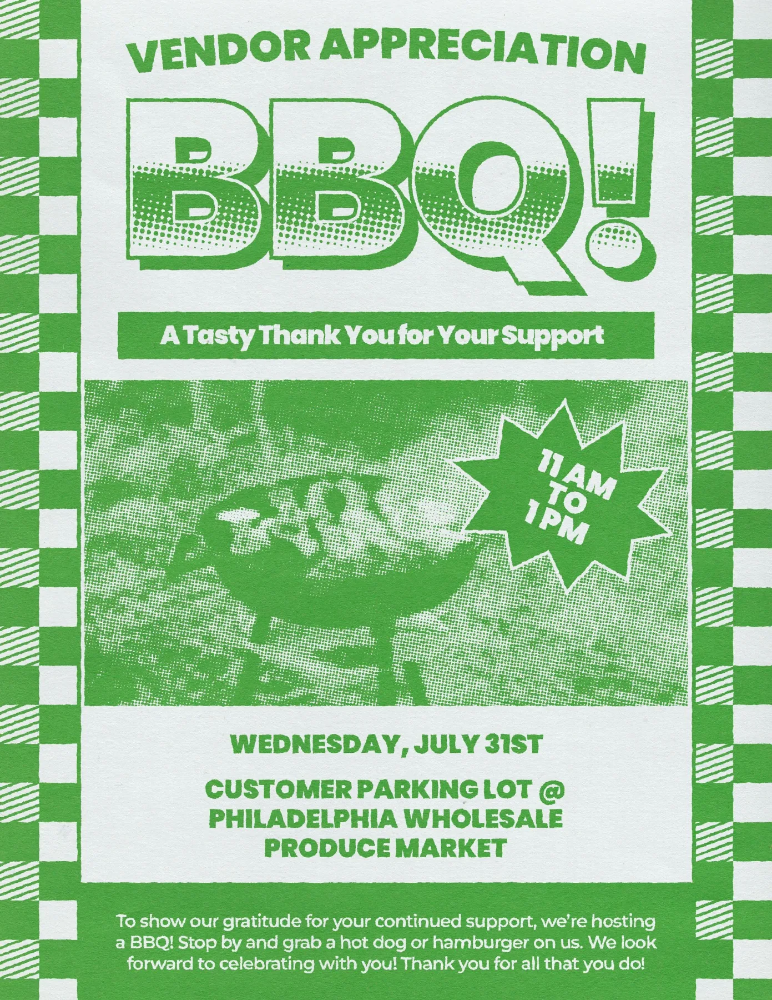
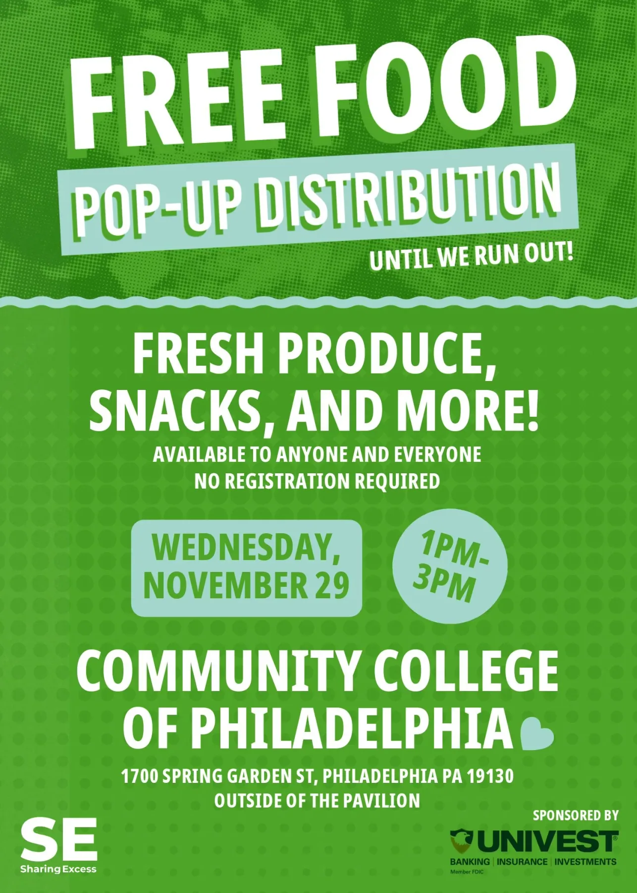
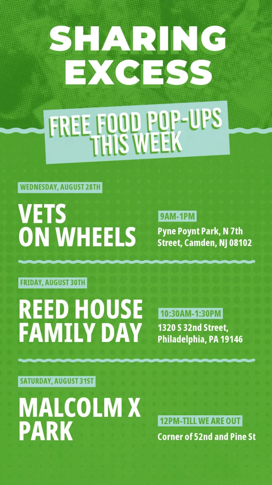
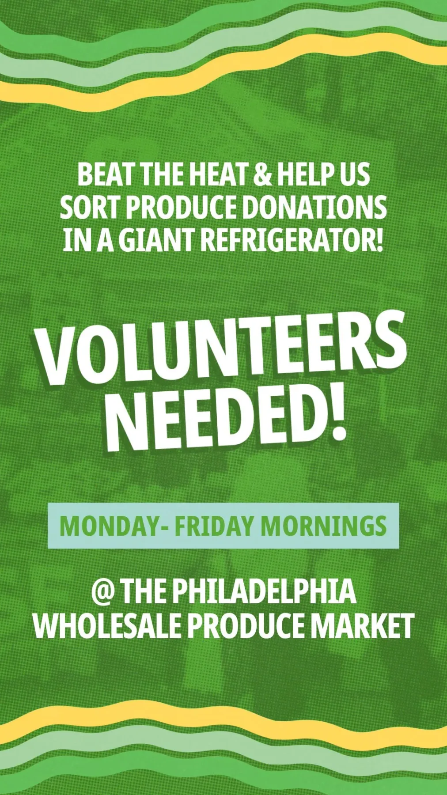
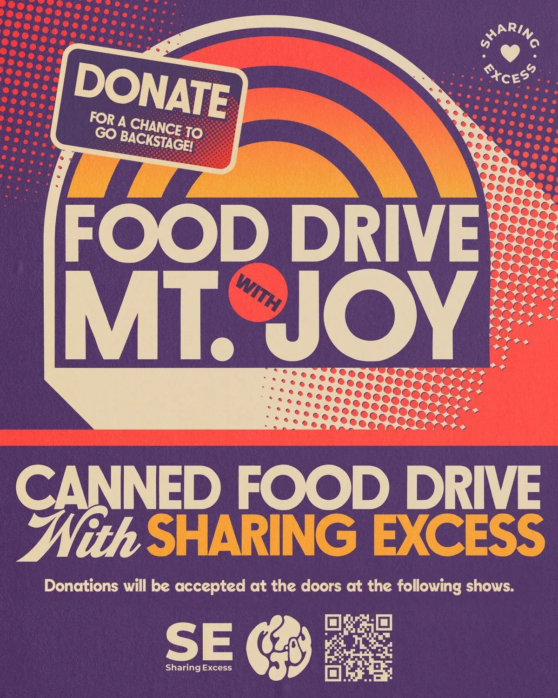
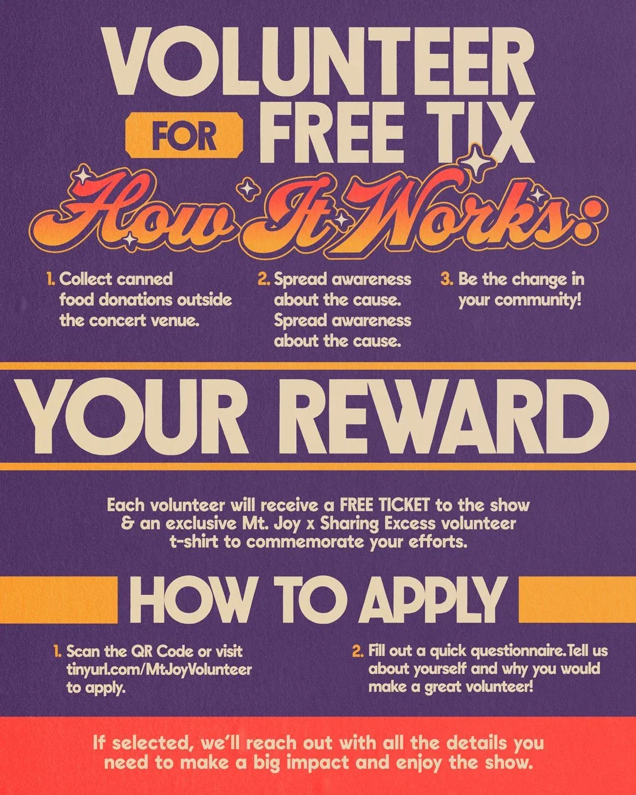
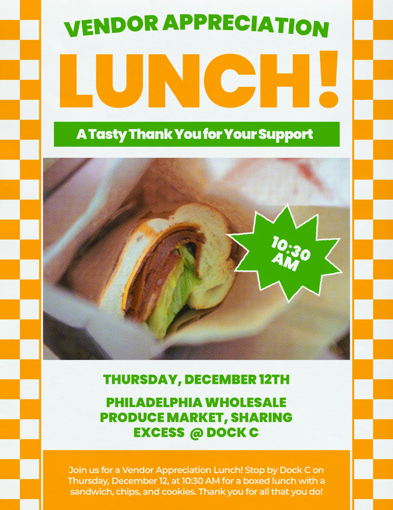
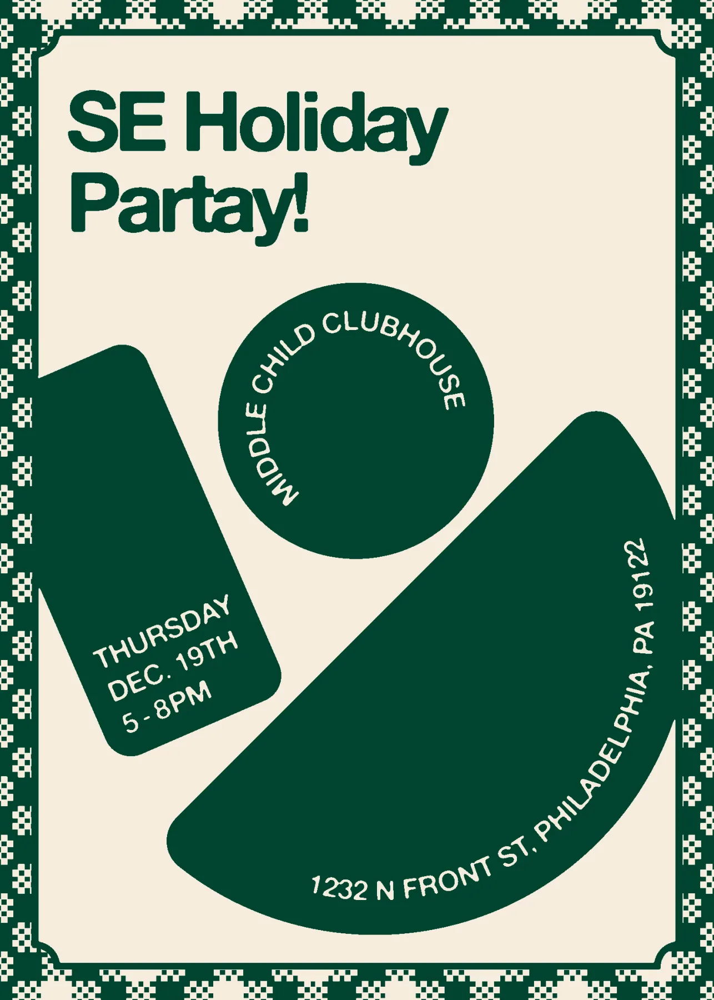

Sharing Excess
Working with Sharing Excess, a nonprofit dedicated to addressing food insecurity, has allowed me to use design to amplify their mission and impact. Supporting nonprofits like Sharing Excess is central to my work, and I take pride in creating marketing collateral and graphics that drive awareness and engagement for meaningful causes.

My projects with Sharing Excess have spanned print and digital platforms, including flyers for community events, vendor appreciation initiatives, and holiday celebrations. For their vendor appreciation events and holiday parties in Philadelphia and New York, I developed cohesive visual materials that reflected the nonprofit’s mission while fostering a sense of unity. From reusable bag designs to impactful social media graphics, each asset was carefully crafted to resonate with audiences and highlight the vital role Sharing Excess plays in reducing food waste and supporting communities.


The design strategy for these projects prioritized clarity and accessibility, creating visuals that engage audiences and inspire action. Bold, minimalist billboards carried succinct messages to capture attention, while social media carousels broke down complex data into digestible and compelling narratives. A consistent visual identity across all materials helped establish trust and recognition, reinforcing Sharing Excess’s nonprofit mission and amplifying their efforts.

One highlight of my work with Sharing Excess was designing materials for their partnership with Mt. Joy, a nationwide food drive during the band’s headlining tour. These designs balanced Sharing Excess’s branding with the band’s aesthetic, successfully rallying volunteers, encouraging donations, and demonstrating the power of collaboration between nonprofits and creative partnerships.


Supporting nonprofits like Sharing Excess allows me to align my creative expertise with causes that make a tangible difference. From large-scale campaigns to everyday marketing needs, my designs aim to foster engagement, inspire action, and contribute to meaningful change. Working with Sharing Excess has been a deeply rewarding opportunity to use design as a force for good.

